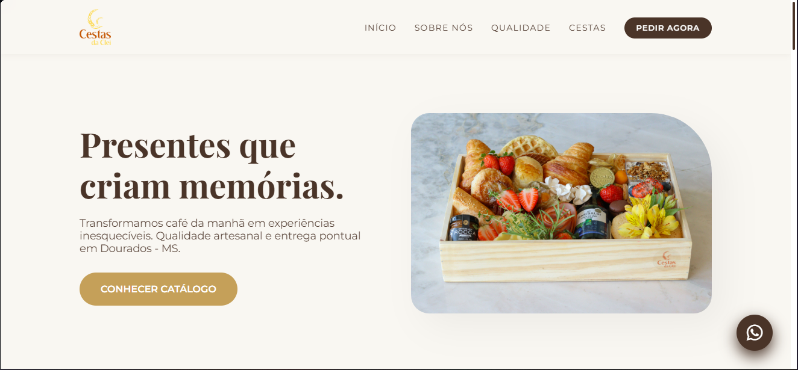
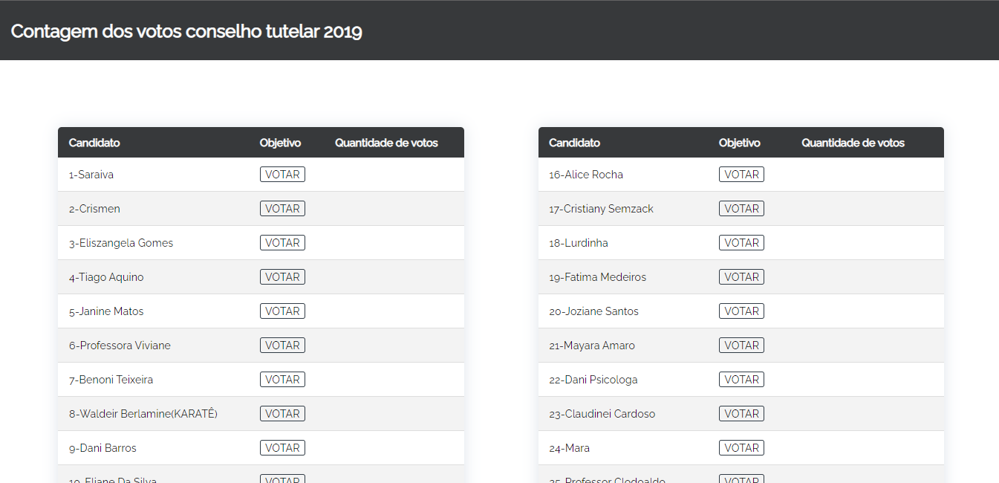

RONAN LAURINDO
DESIGN • CÓDIGO • ESTRATÉGIA
Eu desenvolvo experiências que definem o amanhã.
Soluções completas, do protótipo ao deploy. Pronto para elevar o nível do seu próximo projeto digital.
Soluções completas, do protótipo ao deploy. Pronto para elevar o nível do seu próximo projeto digital.

Uma seleção de trabalhos que demonstram meu foco em performance e experiência do usuário.

Desenvolvimento de uma plataforma personalizada para uma marca de presentes artesanais. O projeto focou-se na criação de um catálogo digital intuitivo, facilitando a navegação entre categorias como cestas de café da manhã, vinhos e opções românticas. O site foi otimizado para conversão direta via WhatsApp, integrando a estética rústica e afetiva da marca com uma interface moderna e responsiva.

Desenvolvimento de uma plataforma customizada para a eleição de conselheiros tutelares, realizada no IFMS. O sistema foi projetado com foco em segurança e integridade, permitindo o registro de votos, autenticação de eleitores e a geração de relatórios de apuração em tempo real. Responsável por todo o ciclo de vida, desde a modelagem do banco de dados até a interface do usuário.
Responsável pelo desenvolvimento e otimização de fluxos de trabalho na plataforma Fluig, focando na automação de processos de negócio. Atuo na sustentação e evolução de APIs REST, garantindo a integridade da comunicação entre sistemas. Responsável pela curadoria e atualização do Bot de Atendimento e pela manutenção do Portal do Cliente, visando a melhoria contínua da experiência do usuário (UX) e a eficiência dos canais digitais.
Atuação híbrida em Suporte e Desenvolvimento, gerenciando redes e parques computacionais, além de projetar e manter softwares. Foco na otimização de sistemas existentes e na implementação de novas ferramentas para melhoria de processos.
Atuei como monitor acadêmico, prestando suporte técnico a alunos da instituição no desenvolvimento de projetos e resolução de problemas em HTML, JavaScript e Programação Orientada a Objetos (POO). Focado em facilitar o aprendizado e a aplicação de boas práticas de código.
Responsável pelo desenvolvimento do novo site institucional, projeto estratégico solicitado pela presidência para modernizar a vitrine digital da organização e otimizar a divulgação de suas atividades.
Minha jornada no desenvolvimento começou com a curiosidade de entender como as coisas funcionam por baixo do capô. Hoje, foco em construir aplicações que não apenas funcionam, mas que oferecem uma experiência excepcional.
Acredito que o código é uma ferramenta para transformar realidades. Por isso, mantenho meu foco na escrita de código limpo, arquiteturas escaláveis e um design que respeita o usuário.